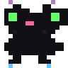
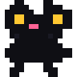
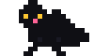
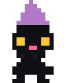
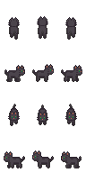

موجودات جادویی که قرنهاست دلهای ما رو تسخیر کردند... 🌙

۷ دلیل جادویی که ثابت میکنه گربههای سیاه بهترینن
در فرهنگهای قدیمی، گربههای سیاه نماد شانس و خوشبختی بودند. ملوانان یک گربه سیاه رو با خودشون به سفر دریایی میبردن چون فکر میکردن بدشانسی رو دور میکنه!
موی سیاه و براق گربههای سیاه مثل مخمل شبانهست. وقتی نور خورشید بهشون میخوره، یه درخشش فیروزهای خاص پیدا میکنن که هیچ حیوان دیگهای نداره.
گربههای سیاه همیشه همراه جادوگرها بودن! اما این فقط یه افسانه نیست - واقعاً یه ارتباط عمیق و معنوی بین این موجودات وجود داره.
صاحبان گربههای سیاه معمولاً میگن که اونا خیلی مهربونتر و باهوشتر از بقیه گربهها هستن. انگار یه هوش ویژهای دارن!
گربههای سیاه توی عکسها فوقالعاده میشینن! کنتراست موی سیاه با چشمهای زرد یا سبزشون یه ترکیب بصری خیرهکنندهست.
گربههای سیاه به انرژی اطرافشون حساس هستن. خیلی از صاحبا میگن که گربه سیاهشون قبل از اتفاقات مهم، رفتارش عوض میشه.
فقط حدود ۱۳٪ گربههای دنیا سیاه هستن! این یعنی داشتن یه گربه سیاه مثل داشتن یه جواهر نادر و منحصربهفرد است.
مجموعهای از زیباترین گربههای سیاه پیکسلی

گربه سیاه نشسته

گربه سیاه در حال راه رفتن

گربه سیاه جادوگر
گربه سیاه خوابیده
گربه سیاه جادویی

گربه سیاه اسپرایت
حقایق جالب و ناشناخته
پرزهای گربه سیاه معمولاً زیر نور فرابنفش درخشش آبی یا بنفش پیدا میکنن!
رنگ چشم گربههای سیاه میتونه از زرد طلایی تا سبز زمردی متغیر باشه.
پنجههای گربههای سیاه معمولاً کمی از بقیه گربهها نرمتره!
گربههای سیاه توی شب تقریباً نامرئی هستن و فقط چشمهاشون میدرخشه!
اگه یه گربه سیاه از جلوت رد شد، نترس! این یه نشونه خوششانسیه. قدیما میگفتن هر گربه سیاهی یه جادوگر خوب توی خودش داره.
اگه شما هم گربه سیاه داری، برام بنویس!